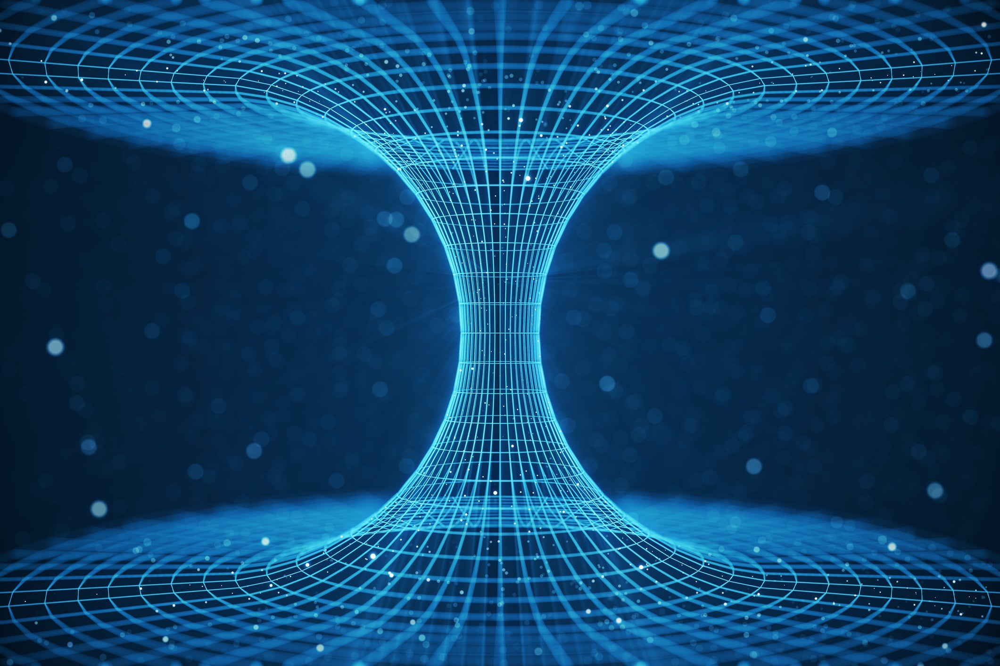
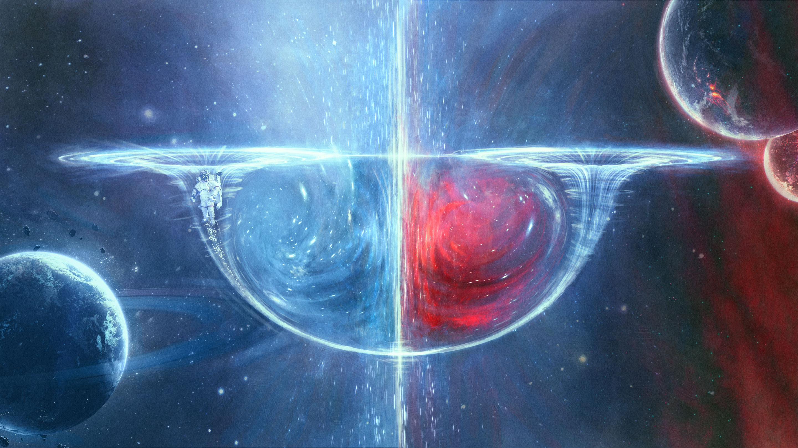
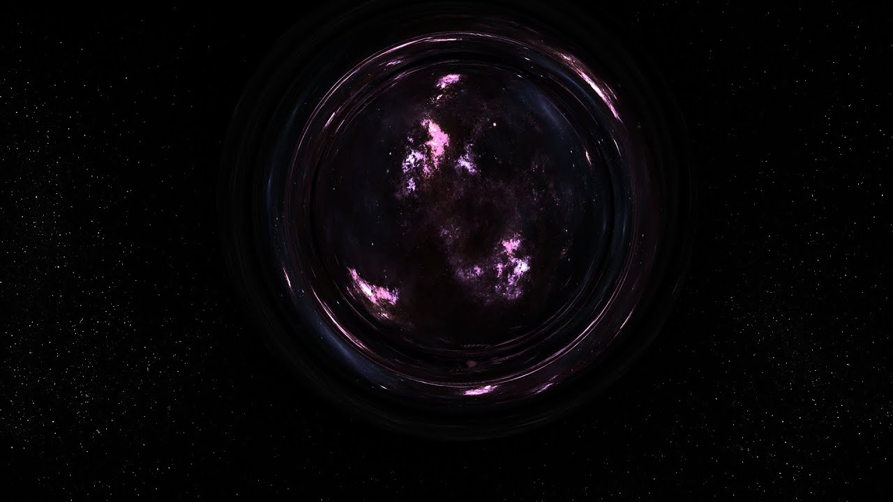

Wormholes
BRIEF DESCRIPTION:-
Wormholes (or "Einstein-Rosen Bridge" as they are called technically) are something that doesn't occur naturally. It is a two-faced distortion in space-time which connects very large distances. Like black holes, even wormholes are one of the solutions of Einstein's Field Equation, but unlike black holes, wormholes cannot occur naturally because they are formed by something called "Negative Energy Density".



Source:Wikipedia/wormholes